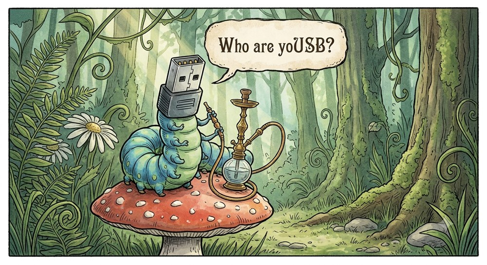
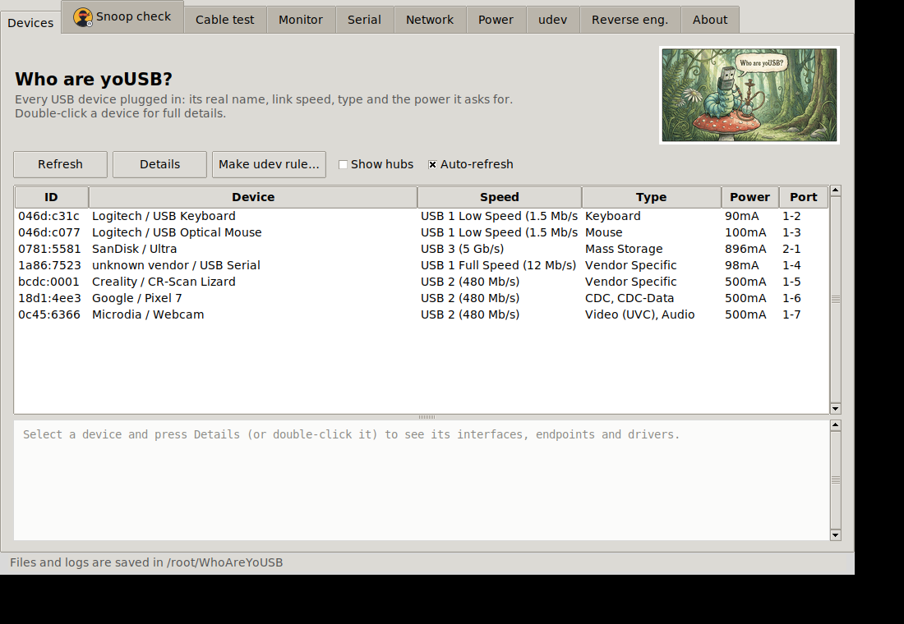
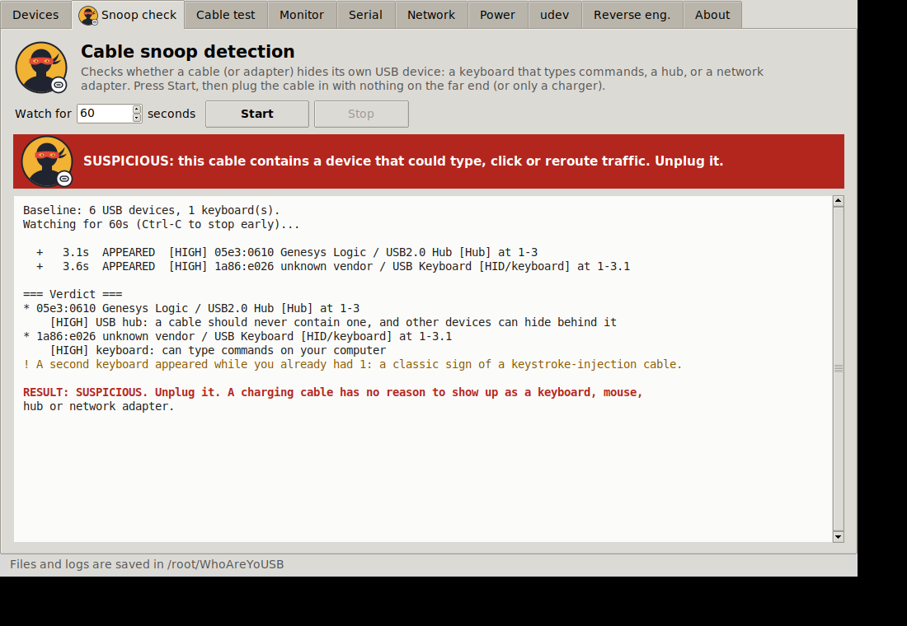
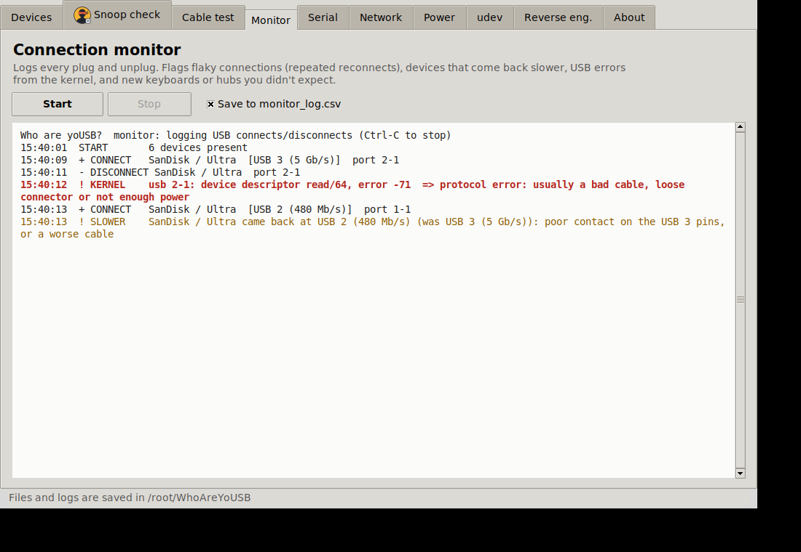
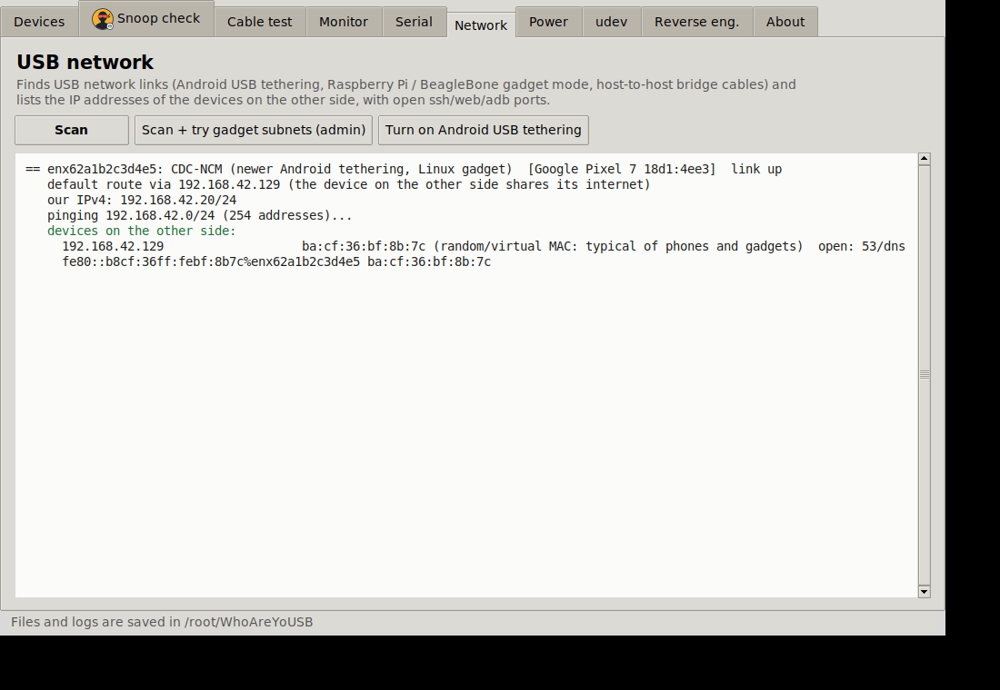

Who are yoUSB?
A multipurpose USB toolkit for Linux. One Python file, no required dependencies.
⚠️ WORK IN PROGRESS: MANY FEATURES MAY BE BROKEN. Only tested on simulated data so far. Don't rely on it for security decisions.
Identify
Real device names, speeds, descriptors, USB-C power info.Cable snoop detection
Spots cables that hide a keyboard, hub or network adapter.Cable test & monitor
Charge-only, USB 2 or 3? Live log of flaky connections.Serial & udev
Port names, permissions, conflicts, rule maker.USB networking
Find phones and gadgets over USB and list their IPs.Reverse engineering
Capture and decode USB traffic, find calibration data.Install
sudo apt install python3-tk # Ubuntu / Mint / Debian (for the window) git clone https://github.com/The-Dorkknight/who-are-yousb.git cd who-are-yousb && python3 whoareyousb.py
Screenshots



